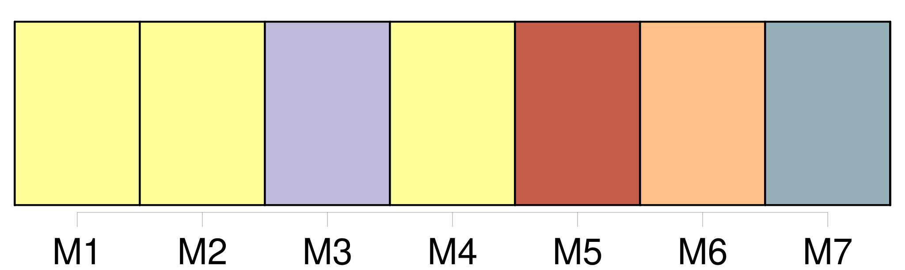

Longueur nb maillons : 14 mentions |
  |
» [13 phrases] [L'Isabelle] , donna Sérafina, et même la soubrette, lui troublaient doucement l'imagination et lui faisaient l'effet plutôt de divinités descendues sur la terre que de simples mortelles. [3 phrases] [Isabelle] prit place à gauche, la soubrette se mit en face, la duègne s'établit à côté du Pédant, Léandre et le Matamore s'assirent où ils voulurent. [11 phrases] [L'Isabelle] était plus jeune que la donna Sérafina, ainsi que l'exigeait [son] emploi d'ingénue ; [elle] ne poussait pas non plus aussi loin la braverie du costume et [se bornait] à une élégante et bourgeoise simplicité, comme il convient à la fille de Cassandre. [Elle] avait le visage mignon, presque enfantin encore, de beaux cheveux d'un châtain soyeux, l'œil voilé par de longs cils, la bouche en cœur et petite, et un air de modestie virginale, plus naturel que feint. Un corsage de taffetas gris, agrémenté de velours noir et de jais, s'allongeait en pointe sur une jupe de même couleur ; une fraise, légèrement empesée, se dressait derrière [sa] jolie nuque où se tordaient de petites boucles de cheveux follets, et un fil de perles fausses entourait [son] col ; quoiqu'au premier abord [elle] attirât moins l'œil que la Sérafina, [elle] le retenait plus longtemps.
Si [elle] n'éblouissait pas, [elle] charmait, ce qui a bien son avantage. |

|
La ressource peut être téléchargée sur la page Ortolang
Si vous avez des questions ou vous voyez des erreurs, merci d'envoyer un mail à silvia.federzoni89@gmail.com
Site développé par S. Federzoni (contact)